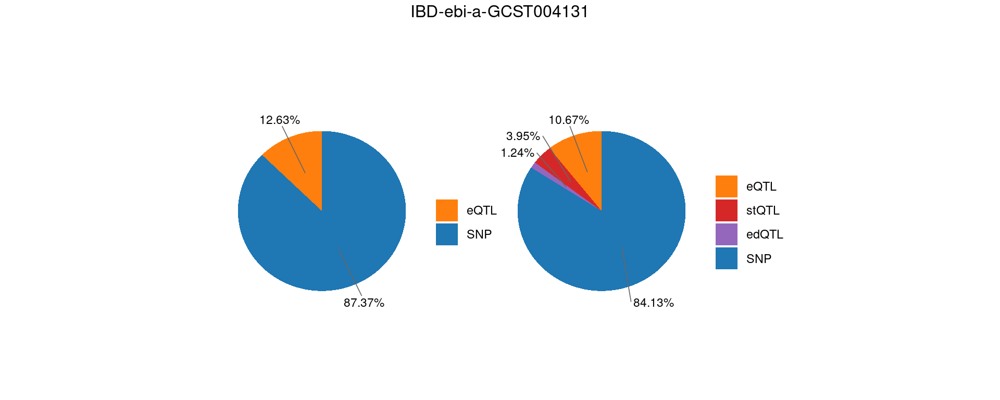

Last updated: 2025-05-20
Checks: 6 1
Knit directory: multigroup_ctwas_analysis/
This reproducible R Markdown analysis was created with workflowr (version 1.7.0). The Checks tab describes the reproducibility checks that were applied when the results were created. The Past versions tab lists the development history.
The R Markdown file has unstaged changes. To know which version of
the R Markdown file created these results, you’ll want to first commit
it to the Git repo. If you’re still working on the analysis, you can
ignore this warning. When you’re finished, you can run
wflow_publish to commit the R Markdown file and build the
HTML.
Great job! The global environment was empty. Objects defined in the global environment can affect the analysis in your R Markdown file in unknown ways. For reproduciblity it’s best to always run the code in an empty environment.
The command set.seed(20231112) was run prior to running
the code in the R Markdown file. Setting a seed ensures that any results
that rely on randomness, e.g. subsampling or permutations, are
reproducible.
Great job! Recording the operating system, R version, and package versions is critical for reproducibility.
Nice! There were no cached chunks for this analysis, so you can be confident that you successfully produced the results during this run.
Great job! Using relative paths to the files within your workflowr project makes it easier to run your code on other machines.
Great! You are using Git for version control. Tracking code development and connecting the code version to the results is critical for reproducibility.
The results in this page were generated with repository version 28cd57c. See the Past versions tab to see a history of the changes made to the R Markdown and HTML files.
Note that you need to be careful to ensure that all relevant files for
the analysis have been committed to Git prior to generating the results
(you can use wflow_publish or
wflow_git_commit). workflowr only checks the R Markdown
file, but you know if there are other scripts or data files that it
depends on. Below is the status of the Git repository when the results
were generated:
Ignored files:
Ignored: .Rhistory
Ignored: cv/
Unstaged changes:
Modified: analysis/realdata_final_combine_qtls.Rmd
Note that any generated files, e.g. HTML, png, CSS, etc., are not included in this status report because it is ok for generated content to have uncommitted changes.
These are the previous versions of the repository in which changes were
made to the R Markdown
(analysis/realdata_final_combine_qtls.Rmd) and HTML
(docs/realdata_final_combine_qtls.html) files. If you’ve
configured a remote Git repository (see ?wflow_git_remote),
click on the hyperlinks in the table below to view the files as they
were in that past version.
| File | Version | Author | Date | Message |
|---|---|---|---|---|
| Rmd | 28cd57c | XSun | 2025-05-20 | update |
library(ctwas)
library(dplyr)
library(ggplot2)
library(ggrepel)
library(egg)
library(gridExtra)
library(grid)
#source("/project/xinhe/xsun/multi_group_ctwas/functions/0.functions.R")
source("/project/xinhe/xsun/multi_group_ctwas/data/samplesize.R")
thin <- 1
vgs <- "shared_all"
L <-5
fix_panel_size <- function(plot, width = 2.1, height = 2) {
set_panel_size(plot,
width = unit(width, "in"),
height = unit(height, "in"))
}
folder_results_multiqtl <- "/project/xinhe/xsun/multi_group_ctwas/24.diff_qtls_0519/snakemake_outputs/"
plot_piechart_topn <- function(ctwas_parameters, colors, by, title, n_tissue=10) {
# Define fixed colors for QTL types
qtl_colors <- c(
eQTL = "#ff7f0e",
sQTL = "#2ca02c",
stQTL = "#d62728",
edQTL = "#9467bd"
)
# Create the initial data frame
data <- data.frame(
category = names(ctwas_parameters$prop_heritability),
percentage = ctwas_parameters$prop_heritability
)
# Split the category into context and type
data <- data %>%
mutate(
context = sub("\\|.*", "", category),
type = sub(".*\\|", "", category)
)
# Aggregate the data based on the 'by' parameter
if (by == "type") {
data <- data %>%
group_by(type) %>%
summarize(percentage = sum(percentage)) %>%
mutate(category = type)
} else if (by == "context") {
data <- data %>%
group_by(context) %>%
summarize(percentage = sum(percentage)) %>%
mutate(category = context)
} else {
stop("Invalid 'by' parameter. Use 'type' or 'context'.")
}
# Calculate percentage labels
data$percentage_label <- paste0(round(data$percentage * 100, 2), "%")
if(nrow(data) > (n_tissue +1)){
data <- data %>%
filter(context != "SNP") %>%
arrange(desc(percentage)) %>%
mutate(rank = row_number()) %>%
mutate(context = ifelse(rank <= n_tissue, context, "Other_Tissues")) %>%
group_by(context) %>%
summarise(percentage = sum(percentage), .groups = "drop") %>%
bind_rows(data %>% filter(context == "SNP") %>% select(context, percentage)) %>%
mutate(
category = context,
percentage_label = paste0(sprintf("%.2f", percentage * 100), "%")
) %>%
arrange(desc(percentage))
sorted_levels <- data %>%
mutate(sort_key = case_when(
category == "Other_Tissues" ~ 1,
category == "SNP" ~ 2,
TRUE ~ 0
)) %>%
arrange(sort_key, desc(percentage)) %>%
pull(category)
} else {
sorted_levels <- data %>%
arrange((category == "SNP"), desc(percentage)) %>%
pull(category)
}
data$category <- factor(data$category, levels = sorted_levels)
# Order data for positioning
data <- data %>%
arrange(category) %>%
mutate(
cumulative = cumsum(percentage),
midpoint = cumulative - percentage / 2
)
# Prepare colors
categories <- levels(data$category)
has_snp <- "SNP" %in% categories
other_cats <- setdiff(categories, "SNP")
color_vec <- c()
if (has_snp) color_vec["SNP"] <- "#1f77b4"
# Split categories into QTL and non-QTL
qtl_cats <- other_cats[other_cats %in% names(qtl_colors)]
non_qtl_cats <- other_cats[!other_cats %in% names(qtl_colors)]
# Assign QTL colors
for (cat in qtl_cats) color_vec[cat] <- qtl_colors[cat]
# Assign non-QTL colors
if (length(non_qtl_cats) > 0) {
if (is.null(names(colors))) {
colors_non_qtl <- rep(colors, length.out = length(non_qtl_cats))
color_vec <- c(color_vec, setNames(colors_non_qtl, non_qtl_cats))
} else {
for (cat in non_qtl_cats) {
color_vec[cat] <- ifelse(cat %in% names(colors), colors[cat], "#808080")
}
}
}
# Calculate label positions
data <- data %>%
mutate(
y_pos = midpoint,
angle = 0,
hjust = 0.5
)
# Create pie chart
pie <- ggplot(data, aes(x = "", y = percentage, fill = category)) +
geom_bar(stat = "identity", width = 1) +
coord_polar("y", start = 0) +
theme_void() +
geom_text_repel(
aes(
y = 1 - y_pos,
label = percentage_label,
angle = angle
),
size = 3,
nudge_x = 0.8,
segment.size = 0.3,
segment.color = "gray40",
box.padding = 0.2,
min.segment.length = 0.1,
hjust = 0.5,
vjust = 0.5
) +
scale_fill_manual(values = color_vec) +
labs(fill = "") +
ggtitle(title)
return(pie)
}trait <- "LDL-ukb-d-30780_irnt"
gwas_n <- samplesize[trait]qtl <- "eonly"
file_param <- paste0(folder_results_multiqtl, trait, "/", trait, ".", qtl, ".thin", thin, ".", vgs, ".param.RDS")
param <- readRDS(file_param)
ctwas_parameters <- summarize_param(param, gwas_n)
p1 <- plot_piechart_topn(ctwas_parameters = ctwas_parameters,colors = colors,by = "type",title = NULL)
qtl <- "sonly"
file_param <- paste0(folder_results_multiqtl, trait, "/", trait, ".", qtl, ".thin", thin, ".", vgs, ".param.RDS")
param <- readRDS(file_param)
ctwas_parameters <- summarize_param(param, gwas_n)
p2 <- plot_piechart_topn(ctwas_parameters = ctwas_parameters,colors = colors,by = "type",title = NULL)
qtl <- "es"
file_param <- paste0(folder_results_multiqtl, trait, "/", trait, ".", qtl, ".thin", thin, ".", vgs, ".param.RDS")
param <- readRDS(file_param)
ctwas_parameters <- summarize_param(param, gwas_n)
p3 <- plot_piechart_topn(ctwas_parameters = ctwas_parameters,colors = colors,by = "type",title = NULL)
# Convert plots to gtables with fixed panel sizes
pie1 <- fix_panel_size(p1)
pie2 <- fix_panel_size(p2)
pie3 <- fix_panel_size(p3)
# Calculate widths of each gtable (plot + legend)
widths <- unit.c(grobWidth(pie1), grobWidth(pie2), grobWidth(pie3))
# Arrange plots with their natural widths
p <- grid.arrange(pie1, pie2, pie3,
ncol = 3,
widths = widths,
top = paste0(trait)
)qtl <- "eonly"
file_param <- paste0(folder_results_multiqtl, trait, "/", trait, ".", qtl, ".thin", thin, ".", vgs, ".param.RDS")
param <- readRDS(file_param)
ctwas_parameters <- summarize_param(param, gwas_n)
p1 <- plot_piechart_topn(ctwas_parameters = ctwas_parameters,colors = colors,by = "type",title = NULL)
qtl <- "ested"
file_param <- paste0(folder_results_multiqtl, trait, "/", trait, ".", qtl, ".thin", thin, ".", vgs, ".param.RDS")
param <- readRDS(file_param)
ctwas_parameters <- summarize_param(param, gwas_n)
p2 <- plot_piechart_topn(ctwas_parameters = ctwas_parameters,colors = colors,by = "type",title = NULL)
pie1 <- fix_panel_size(p1)
pie2 <- fix_panel_size(p2)
# Calculate widths of each gtable (plot + legend)
widths <- unit.c(grobWidth(pie1), grobWidth(pie2))
# Arrange plots with their natural widths
p <- grid.arrange(pie1, pie2,
ncol = 2,
widths = widths,
top = paste0(trait)
)qtl <- "stonly"
file_param <- paste0(folder_results_multiqtl, trait, "/", trait, ".", qtl, ".thin", thin, ".", vgs, ".param.RDS")
param <- readRDS(file_param)
ctwas_parameters <- summarize_param(param, gwas_n)
p1 <- plot_piechart_topn(ctwas_parameters = ctwas_parameters,colors = colors,by = "type",title = NULL)
qtl <- "edonly"
file_param <- paste0(folder_results_multiqtl, trait, "/", trait, ".", qtl, ".thin", thin, ".", vgs, ".param.RDS")
param <- readRDS(file_param)
ctwas_parameters <- summarize_param(param, gwas_n)
p2 <- plot_piechart_topn(ctwas_parameters = ctwas_parameters,colors = colors,by = "type",title = NULL)
qtl <- "ested"
file_param <- paste0(folder_results_multiqtl, trait, "/", trait, ".", qtl, ".thin", thin, ".", vgs, ".param.RDS")
param <- readRDS(file_param)
ctwas_parameters <- summarize_param(param, gwas_n)
p3 <- plot_piechart_topn(ctwas_parameters = ctwas_parameters,colors = colors,by = "type",title = NULL)
# Convert plots to gtables with fixed panel sizes
pie1 <- fix_panel_size(p1)
pie2 <- fix_panel_size(p2)
pie3 <- fix_panel_size(p3)
# Calculate widths of each gtable (plot + legend)
widths <- unit.c(grobWidth(pie1), grobWidth(pie2), grobWidth(pie3))
# Arrange plots with their natural widths
p <- grid.arrange(pie1, pie2, pie3,
ncol = 3,
widths = widths,
top = paste0(trait)
)qtl <- "stonly"
file_param <- paste0(folder_results_multiqtl, trait, "/", trait, ".", qtl, ".thin", thin, ".", vgs, ".param.RDS")
param <- readRDS(file_param)
ctwas_parameters <- summarize_param(param, gwas_n)
p1 <- plot_piechart_topn(ctwas_parameters = ctwas_parameters,colors = colors,by = "type",title = NULL)
qtl <- "sst"
file_param <- paste0(folder_results_multiqtl, trait, "/", trait, ".", qtl, ".thin", thin, ".", vgs, ".param.RDS")
param <- readRDS(file_param)
ctwas_parameters <- summarize_param(param, gwas_n)
p2 <- plot_piechart_topn(ctwas_parameters = ctwas_parameters,colors = colors,by = "type",title = NULL)
pie1 <- fix_panel_size(p1)
pie2 <- fix_panel_size(p2)
# Calculate widths of each gtable (plot + legend)
widths <- unit.c(grobWidth(pie1), grobWidth(pie2))
# Arrange plots with their natural widths
p <- grid.arrange(pie1, pie2,
ncol = 2,
widths = widths,
top = paste0(trait)
)trait <- "IBD-ebi-a-GCST004131"
gwas_n <- samplesize[trait]qtl <- "eonly"
file_param <- paste0(folder_results_multiqtl, trait, "/", trait, ".", qtl, ".thin", thin, ".", vgs, ".param.RDS")
param <- readRDS(file_param)
ctwas_parameters <- summarize_param(param, gwas_n)
p1 <- plot_piechart_topn(ctwas_parameters = ctwas_parameters,colors = colors,by = "type",title = NULL)
qtl <- "sonly"
file_param <- paste0(folder_results_multiqtl, trait, "/", trait, ".", qtl, ".thin", thin, ".", vgs, ".param.RDS")
param <- readRDS(file_param)
ctwas_parameters <- summarize_param(param, gwas_n)
p2 <- plot_piechart_topn(ctwas_parameters = ctwas_parameters,colors = colors,by = "type",title = NULL)
qtl <- "es"
file_param <- paste0(folder_results_multiqtl, trait, "/", trait, ".", qtl, ".thin", thin, ".", vgs, ".param.RDS")
param <- readRDS(file_param)
ctwas_parameters <- summarize_param(param, gwas_n)
p3 <- plot_piechart_topn(ctwas_parameters = ctwas_parameters,colors = colors,by = "type",title = NULL)
# Convert plots to gtables with fixed panel sizes
pie1 <- fix_panel_size(p1)
pie2 <- fix_panel_size(p2)
pie3 <- fix_panel_size(p3)
# Calculate widths of each gtable (plot + legend)
widths <- unit.c(grobWidth(pie1), grobWidth(pie2), grobWidth(pie3))
# Arrange plots with their natural widths
p <- grid.arrange(pie1, pie2, pie3,
ncol = 3,
widths = widths,
top = paste0(trait)
)qtl <- "eonly"
file_param <- paste0(folder_results_multiqtl, trait, "/", trait, ".", qtl, ".thin", thin, ".", vgs, ".param.RDS")
param <- readRDS(file_param)
ctwas_parameters <- summarize_param(param, gwas_n)
p1 <- plot_piechart_topn(ctwas_parameters = ctwas_parameters,colors = colors,by = "type",title = NULL)
qtl <- "ested"
file_param <- paste0(folder_results_multiqtl, trait, "/", trait, ".", qtl, ".thin", thin, ".", vgs, ".param.RDS")
param <- readRDS(file_param)
ctwas_parameters <- summarize_param(param, gwas_n)
p2 <- plot_piechart_topn(ctwas_parameters = ctwas_parameters,colors = colors,by = "type",title = NULL)
pie1 <- fix_panel_size(p1)
pie2 <- fix_panel_size(p2)
# Calculate widths of each gtable (plot + legend)
widths <- unit.c(grobWidth(pie1), grobWidth(pie2))
# Arrange plots with their natural widths
p <- grid.arrange(pie1, pie2,
ncol = 2,
widths = widths,
top = paste0(trait)
)qtl <- "stonly"
file_param <- paste0(folder_results_multiqtl, trait, "/", trait, ".", qtl, ".thin", thin, ".", vgs, ".param.RDS")
param <- readRDS(file_param)
ctwas_parameters <- summarize_param(param, gwas_n)
p1 <- plot_piechart_topn(ctwas_parameters = ctwas_parameters,colors = colors,by = "type",title = NULL)
qtl <- "edonly"
file_param <- paste0(folder_results_multiqtl, trait, "/", trait, ".", qtl, ".thin", thin, ".", vgs, ".param.RDS")
param <- readRDS(file_param)
ctwas_parameters <- summarize_param(param, gwas_n)
p2 <- plot_piechart_topn(ctwas_parameters = ctwas_parameters,colors = colors,by = "type",title = NULL)
qtl <- "ested"
file_param <- paste0(folder_results_multiqtl, trait, "/", trait, ".", qtl, ".thin", thin, ".", vgs, ".param.RDS")
param <- readRDS(file_param)
ctwas_parameters <- summarize_param(param, gwas_n)
p3 <- plot_piechart_topn(ctwas_parameters = ctwas_parameters,colors = colors,by = "type",title = NULL)
# Convert plots to gtables with fixed panel sizes
pie1 <- fix_panel_size(p1)
pie2 <- fix_panel_size(p2)
pie3 <- fix_panel_size(p3)
# Calculate widths of each gtable (plot + legend)
widths <- unit.c(grobWidth(pie1), grobWidth(pie2), grobWidth(pie3))
# Arrange plots with their natural widths
p <- grid.arrange(pie1, pie2, pie3,
ncol = 3,
widths = widths,
top = paste0(trait)
)qtl <- "stonly"
file_param <- paste0(folder_results_multiqtl, trait, "/", trait, ".", qtl, ".thin", thin, ".", vgs, ".param.RDS")
param <- readRDS(file_param)
ctwas_parameters <- summarize_param(param, gwas_n)
p1 <- plot_piechart_topn(ctwas_parameters = ctwas_parameters,colors = colors,by = "type",title = NULL)
qtl <- "sst"
file_param <- paste0(folder_results_multiqtl, trait, "/", trait, ".", qtl, ".thin", thin, ".", vgs, ".param.RDS")
param <- readRDS(file_param)
ctwas_parameters <- summarize_param(param, gwas_n)
p2 <- plot_piechart_topn(ctwas_parameters = ctwas_parameters,colors = colors,by = "type",title = NULL)
pie1 <- fix_panel_size(p1)
pie2 <- fix_panel_size(p2)
# Calculate widths of each gtable (plot + legend)
widths <- unit.c(grobWidth(pie1), grobWidth(pie2))
# Arrange plots with their natural widths
p <- grid.arrange(pie1, pie2,
ncol = 2,
widths = widths,
top = paste0(trait)
)
sessionInfo()R version 4.2.0 (2022-04-22)
Platform: x86_64-pc-linux-gnu (64-bit)
Running under: CentOS Linux 7 (Core)
Matrix products: default
BLAS/LAPACK: /software/openblas-0.3.13-el7-x86_64/lib/libopenblas_haswellp-r0.3.13.so
locale:
[1] C
attached base packages:
[1] grid stats graphics grDevices utils datasets methods
[8] base
other attached packages:
[1] egg_0.4.5 gridExtra_2.3 ggrepel_0.9.1 ggplot2_3.5.1 dplyr_1.1.4
[6] ctwas_0.5.19
loaded via a namespace (and not attached):
[1] colorspace_2.0-3 rjson_0.2.21
[3] ellipsis_0.3.2 rprojroot_2.0.3
[5] XVector_0.36.0 locuszoomr_0.2.1
[7] GenomicRanges_1.48.0 base64enc_0.1-3
[9] fs_1.5.2 rstudioapi_0.13
[11] farver_2.1.0 bit64_4.0.5
[13] AnnotationDbi_1.58.0 fansi_1.0.3
[15] xml2_1.3.3 codetools_0.2-18
[17] logging_0.10-108 cachem_1.0.6
[19] knitr_1.39 jsonlite_1.8.0
[21] workflowr_1.7.0 Rsamtools_2.12.0
[23] dbplyr_2.1.1 png_0.1-7
[25] readr_2.1.2 compiler_4.2.0
[27] httr_1.4.3 assertthat_0.2.1
[29] Matrix_1.5-3 fastmap_1.1.0
[31] lazyeval_0.2.2 cli_3.6.1
[33] later_1.3.0 htmltools_0.5.2
[35] prettyunits_1.1.1 tools_4.2.0
[37] gtable_0.3.0 glue_1.6.2
[39] GenomeInfoDbData_1.2.8 rappdirs_0.3.3
[41] Rcpp_1.0.12 Biobase_2.56.0
[43] jquerylib_0.1.4 vctrs_0.6.5
[45] Biostrings_2.64.0 rtracklayer_1.56.0
[47] xfun_0.41 stringr_1.5.1
[49] irlba_2.3.5 lifecycle_1.0.4
[51] restfulr_0.0.14 ensembldb_2.20.2
[53] XML_3.99-0.14 zlibbioc_1.42.0
[55] zoo_1.8-10 scales_1.3.0
[57] gggrid_0.2-0 hms_1.1.1
[59] promises_1.2.0.1 MatrixGenerics_1.8.0
[61] ProtGenerics_1.28.0 parallel_4.2.0
[63] SummarizedExperiment_1.26.1 AnnotationFilter_1.20.0
[65] LDlinkR_1.2.3 yaml_2.3.5
[67] curl_4.3.2 memoise_2.0.1
[69] sass_0.4.1 biomaRt_2.54.1
[71] stringi_1.7.6 RSQLite_2.3.1
[73] highr_0.9 S4Vectors_0.34.0
[75] BiocIO_1.6.0 GenomicFeatures_1.48.3
[77] BiocGenerics_0.42.0 filelock_1.0.2
[79] BiocParallel_1.30.3 repr_1.1.4
[81] GenomeInfoDb_1.39.9 rlang_1.1.2
[83] pkgconfig_2.0.3 matrixStats_0.62.0
[85] bitops_1.0-7 evaluate_0.15
[87] lattice_0.20-45 purrr_1.0.2
[89] labeling_0.4.2 GenomicAlignments_1.32.0
[91] htmlwidgets_1.5.4 cowplot_1.1.1
[93] bit_4.0.4 tidyselect_1.2.0
[95] magrittr_2.0.3 AMR_2.1.1
[97] R6_2.5.1 IRanges_2.30.0
[99] generics_0.1.2 DelayedArray_0.22.0
[101] DBI_1.2.2 withr_2.5.0
[103] pgenlibr_0.3.3 pillar_1.9.0
[105] whisker_0.4 mixsqp_0.3-43
[107] KEGGREST_1.36.3 RCurl_1.98-1.7
[109] tibble_3.2.1 crayon_1.5.1
[111] utf8_1.2.2 BiocFileCache_2.4.0
[113] plotly_4.10.0 tzdb_0.4.0
[115] rmarkdown_2.25 progress_1.2.2
[117] data.table_1.14.2 blob_1.2.3
[119] git2r_0.30.1 digest_0.6.29
[121] tidyr_1.3.0 httpuv_1.6.5
[123] stats4_4.2.0 munsell_0.5.0
[125] viridisLite_0.4.0 skimr_2.1.4
[127] bslib_0.3.1